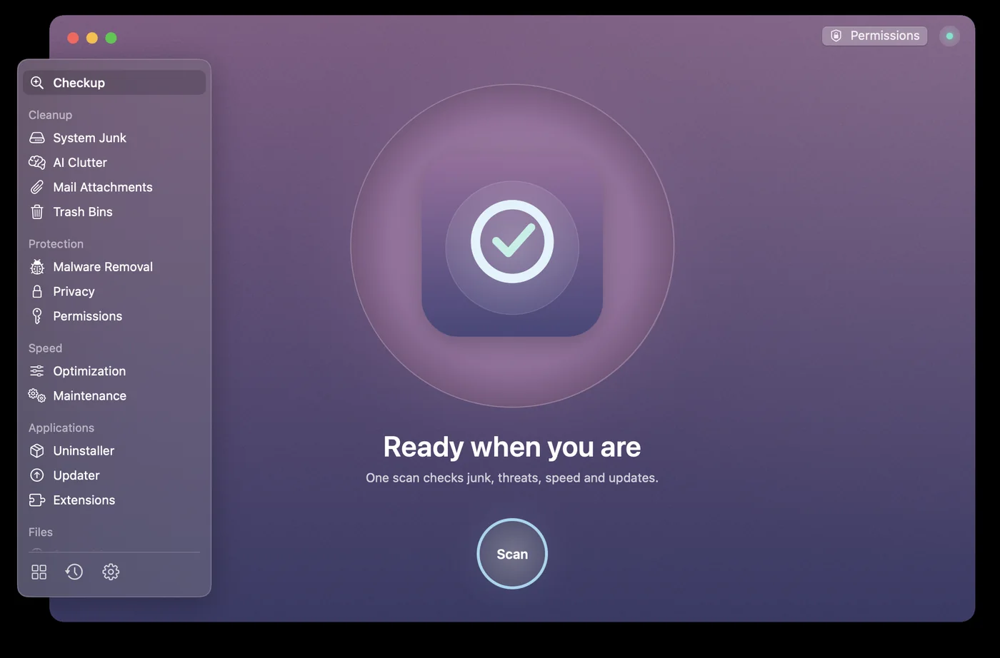
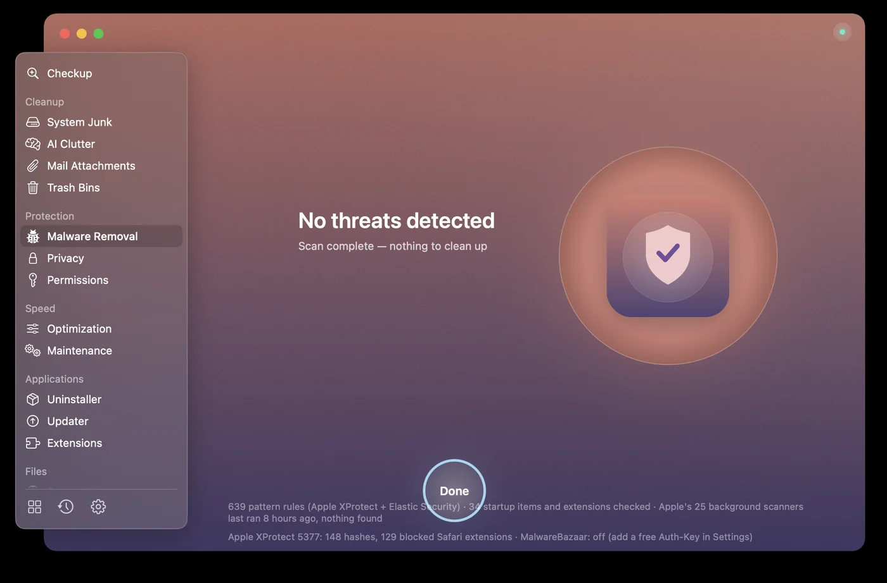
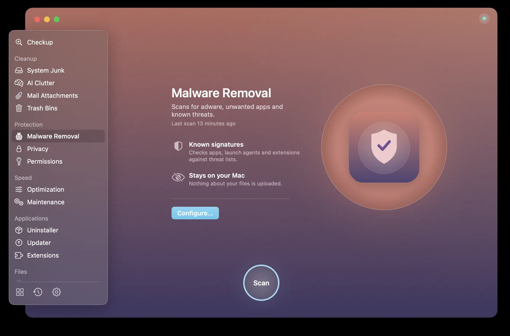
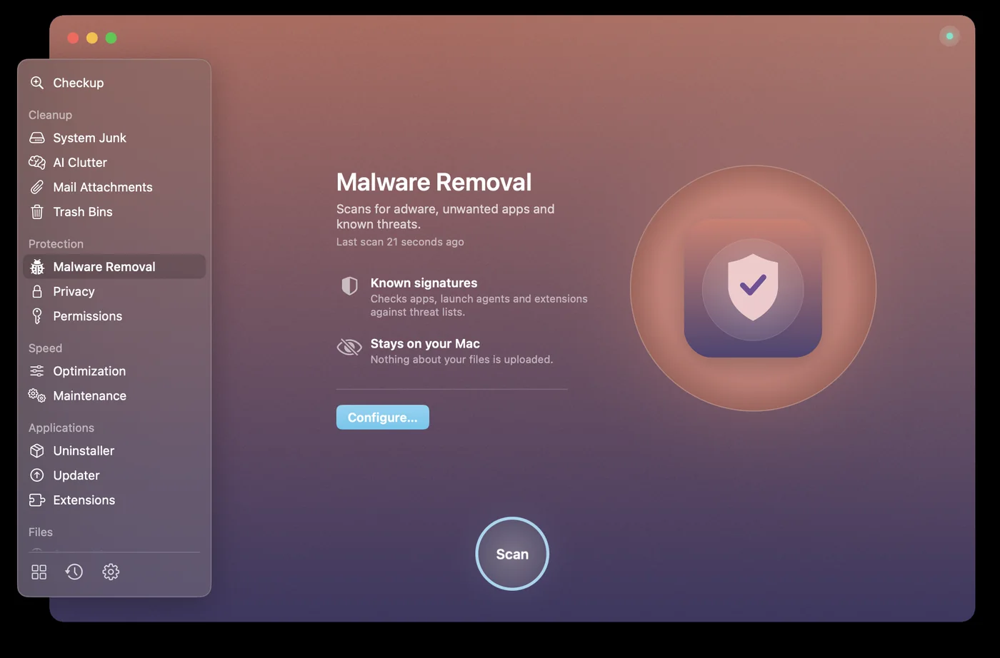
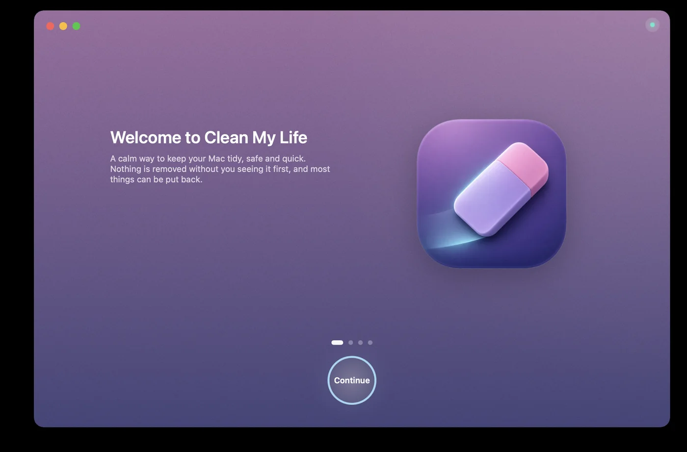

Cleanup
System Junk, AI Clutter, Downloads, Similar Photos, Screenshots, Mail Attachments, Trash Bins, Project Junk, Disk Hogs and Activity history.
25 tools to clear the junk, protect the Mac and keep it fast. A real malware scan with Apple XProtect and Elastic's macOS rules. No subscription, no account, no telemetry.

Everything in one window
Cleanup, protection, performance, applications and disk insight. Every module is included, and every deletion is review-first.
System Junk, AI Clutter, Downloads, Similar Photos, Screenshots, Mail Attachments, Trash Bins, Project Junk, Disk Hogs and Activity history.
Malware Removal, Privacy, Browser Extensions, Saved Wi-Fi and a read-only Permissions overview.
Login items and launch agents with per-item control, plus maintenance scripts behind a single administrator prompt.
Uninstaller with leftover detection, Reset to Defaults, Unused Apps, Extensions and a read-only Updater.
Space Lens, Large & Old Files, progressive Duplicates with APFS Clone Consolidate, and the Shredder.
CPU, memory, disk, battery, network and swap, a recommendation you can act on, and the last malware scan.
Protection that goes deeper
The old scanner used 32 whole-file hashes. This one evaluates about 639 YARA rules and checks the places malware actually restarts from.
Not an antivirus. No behavioural monitoring, no cloud sandbox, no zero-day promise. The app says so, and never pre-selects a guess.

A look inside
Real screens from the app, not renders. The card is the whole window, and the palette follows the work.



Install
Download the DMG, or build it yourself. YARA-X is optional; without it the hash and heuristic checks still run.
Signed ad-hoc for this first beta. macOS asks once; then drag the app to Applications.
Get the DMGxattr -dr com.apple.quarantine "/Applications/Clean My Life.app"Not notarized yet. Building from source avoids the warning entirely.
Xcode 16 or later, macOS 14 or later. The release build creates a local app bundle.
git clone https://github.com/itchyparrot53/clean-my-life.git
cd clean-my-life
brew install yara-x
swift build
swift test
bash scripts/build-dmg.sh --app-onlyFull Disk Access is needed for Mail Attachments, Privacy and parts of the malware scan. Add the app in System Settings, Privacy & Security, Full Disk Access, then restart it.
Read how the scanner worksPrivacy
No analytics, no crash reporter, no account. Cleaning is offline. The only optional network call is the MalwareBazaar hash feed, and it needs your own free key.
The whole app is here to read, build and change. Clean My Life is an independent fork, and the upstream credit stays in NOTICE.
Read the licenceQuestions
Yes. BSD-3-Clause, no subscription, no in-app purchase and no paid tier. The malware engine, including the YARA rules, is in the same free build.
No. It matches known hashes and published rules. It does not watch behaviour, use a cloud sandbox or promise zero-day protection. An unknown sample can get through, and the app says so.
The 0.1.0 build is ad-hoc signed, not notarized. Remove the quarantine flag with the command above, or build from source. A Developer ID build will remove that step.
Apple ships about 500 pattern rules in XProtect and the old scanner used only the whole-file hashes. YARA-X evaluates all the rules, plus Elastic's macOS rules. Install it with brew install yara-x; without it the app still scans with hashes and heuristics.
No. It attaches the image read-only, scans it in a temporary mount, detaches it and reports the container. Nothing inside is deleted.
Clean History and the compiled rule cache live in your user Library. Nothing is uploaded. The optional MalwareBazaar request sends your Auth-Key and query, never file hashes or paths.
⌘R scan, ⌘⌫ clean, ⌘Z undo, Space Quick Look, ⌘F search, Esc back, ⌘1 to ⌘9 sidebar, ⌘, settings.
macOS 14 Sonoma or later, on Apple silicon or Intel. The app is built with Swift 6 and SwiftUI.
Free, open source, and quiet about it.